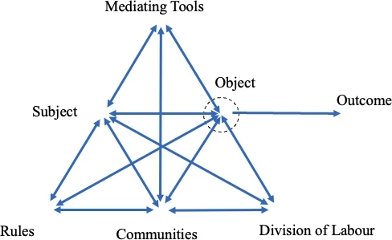
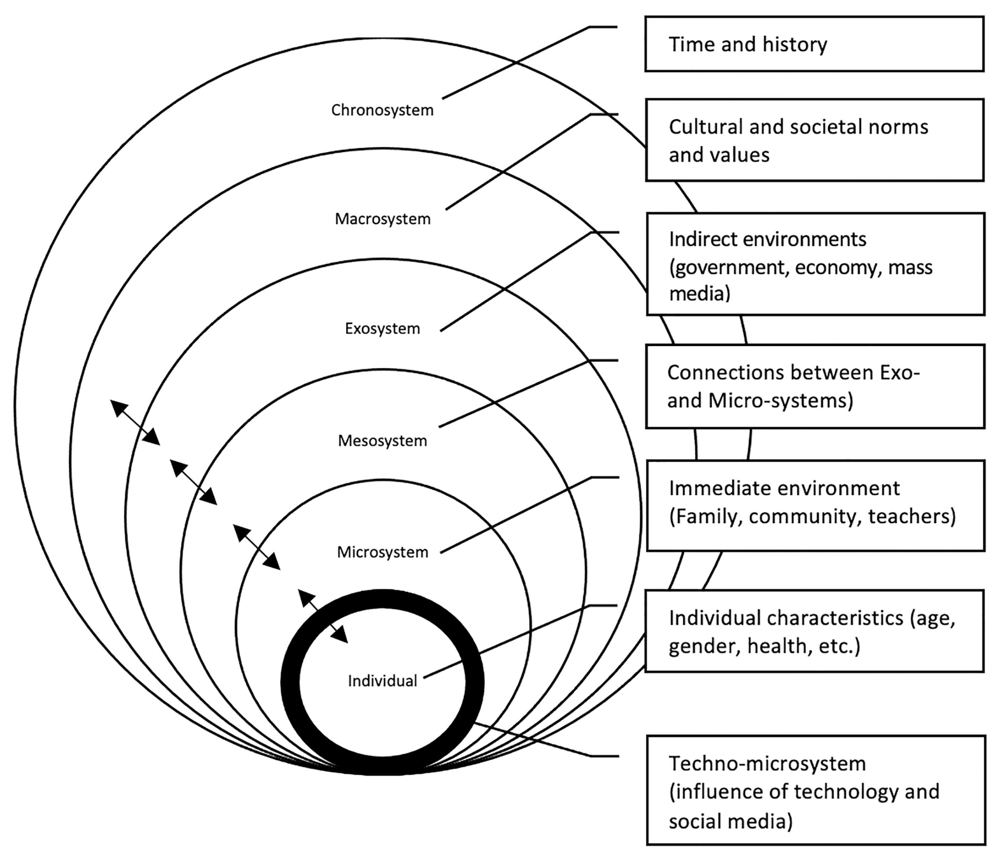

flowchart LR A(Research Question 1) A --> B(Subject) A --> C(Object) A --> D(Mediating tools) A --> E(Rules) A --> F(Community) A --> G(Division of labour) A --> H(Outcome)
Among other categorization, there are two types of coding, which shape how codebooks are developed, i.e., inductive coding and deductive coding. In inductive analysis, the codebook is developed based on what we find in the data, as the showcase in Chapter 9, and deductive coding uses a pre-determined framework or an existing theory as the codebook.
Developing codebooks from the data
To develop the codebook from the data, the research team members who are involved in coding the data need to code together several papers, field notes, interview transcripts, or other materials to be able to develop exhausted themes for the codebook. According to Hennink & Kaiser (2022)  and Lu et al. (2024)
and Lu et al. (2024)  , the theme saturation is usually reached after coding on average 10-13 interviews. Obviously, two interviews as in our showcase in Chapter 9 are not adequate.
, the theme saturation is usually reached after coding on average 10-13 interviews. Obviously, two interviews as in our showcase in Chapter 9 are not adequate.
- Breaking down the research questions into several parts if possible
- Determine what part of the text is intended for coding. In coding a paper, whether the team only code result section, and whether the discussion section is also included. If the answer to the research question cannot be found in the result section, which section should be read next.
- The same information might appears in several parts of the text. So the team needs to decide which part should be prioritized, or whether the same information should be coded multiple times.
- Some information might be represented by one phrase or one clause, so the team needs to decide whether to code only this phrase or clause, or whether to code the whole sentence.
This protocol can be revisited and revised during the coding because the same protocol will be used when each team member codes the rest of the data independently. In addition, this protocol needs to be reported in the systematic literature review paper for transparency and replicability.
Developing codebooks based on predetermined framework
Developing codebooks from an established framework gives some benefit to researchers. For example, one of the most frequently used framework in education is Cultural Historical Activity Theory (CHAT). This framework has seven dimensions or what quantitative researchers call “constructs”. These dimensions have been defined and described comprehensively and thus they can be used as the codebook. To put demonstrate this, I will present all the dimensions, with brief definition, in the following table. For further details with this framework and some other frameworks, please read Bingham et al. (2024), particularly Chapter 6. Due to copywrite restrictions, I cannot provide access to this book. The table below is based on the summary of works authored by Cong-Lem (2022)  and Grimalt-Álvaro & Ametller (2021)
and Grimalt-Álvaro & Ametller (2021)  .
.
| Dimensions | Description | Example* |
|---|---|---|
| Subject | Individuals who perform the activity | Teachers, community of teachers |
| Object | The goal or motive of the activity. The raw material or problem space at which the activity is directed. | Student learning experience |
| Mediating tools | Tools (physical or psychological) used to perform the activity | pedagogy and concept (psychological), chalk and projector (physical) |
| Rules | The norms and regulations constraining or enabling the performance of the activity | Classroom rules, school rules, administration regulation |
| Community | Other groups of people involved in the activity. | Students, colleagues, families, educational institutions, society |
| Division of labour | How responsibilities are shared among members of the community | Teacher's and students' roles, school teachers' roles, families roles |
| Outcome | The transformed reality, the results and product, which can be of an ideal nature | Students who have positive learning experience |
| *This example is based on a topic related to chassroom instruction. | ||
The relationship between one dimension and another in CHAT framework is represented in the following figure.

To conclude, using CHAT framework to analyze the data, the seven dimensions can be converted into the codebook. These dimentions can be imported to the software used for coding such as NVIVO. The following figure illustrates this codebook.
In the coding process, each relevant statement is assigned into one of the dimensions in the codebook above. Using the coding software, these statements need to selected, dragged, and dropped into these dimensions. If we need to analyze the data a bit more detail, we can use another framework to supplement this CHAT framework.
Developing codebooks by combining two frameworks
Some researchers, probably also depending on research questions or their research target, consider the research findings are still very general when only one framework is used. Therefore, they bring in one more framework as a complementary framework.
In the case of CHAT framework as the primary framework, we can group the coded statements in each CHAT dimension into several themes, and these themes are borrowed from, for example, three dimensions of Bronfenbrenner (2001)  framework. In Bingham et al. (2024), this framework consists of six domensions, frequently referred as “levels”, but let’s use only three levels for our demonstration because these three levels are most relevant to the case of classroom instructions.
framework. In Bingham et al. (2024), this framework consists of six domensions, frequently referred as “levels”, but let’s use only three levels for our demonstration because these three levels are most relevant to the case of classroom instructions.

For our purpose, let’s consider “microsystem,” “mesosystem,” and “exosystem.” Microsystem is factors related classrooms such as teachers, students, and teaching media. Mesosystem is factors controlled by schools such as teacher training, principal management style, school policy, etc. Finally, exosystem covers factors beyond school’s control such as funding from the government, curriculum, government-funded professional development, national policy, etc. These levels or dimensions are added to each dimension of the primary framework, as illustrated in the following figure.
flowchart LR A(Research Question 1) A --> B(Subject) B --> I(Micro level) B --> J(Meso level) B --> K(Exo level) A --> C(Object) C --> L(Micro level) C --> M(Meso level) C --> N(Exo level) A --> D(Mediating tools) D --> O(Micro level) D --> P(Meso level) D --> Q(Exo level) A --> E(Rules) E --> R(Micro level) E --> S(Meso level) E --> T(Exo level) A --> F(Community) F --> U(Micro level) F --> V(Meso level) F --> W(Exo level) A --> G(Division of labour) G --> X(Micro level) G --> Y(Meso level) G --> Z(Exo level) A --> H(Outcome) H --> AA(Micro level) H --> AB(Meso level) H --> AC(Exo level)
Developing codebooks by mixing inductive and deductive approaches
Finally, the inductive coding (creating themes from the data) and inductive coding (using established framework) can be combined to cover all possible themes which can emerge from the data. This process is almost similar to combining primary and supplementary frameworks. In this case, the primary or supplementary framework is replaced by themes emerged from the data.
Inductive coding for supplementary themes
In this case, the primary themes are based on an established framework but for each dimension of this framework is extended by themes emerging from the data. Therefore, the second layer will not be uniform because the data determines the themes to supplement each dimension. To demonstrate this in the following figure, let’s borrow the three dimensions from Bronfenbrenner (2001) framework.
flowchart LR A(Research Question 1) A --> B(Micro level) B --> E(......) B --> F(......) B --> G(......) B --> H(......) A --> C(Meso level) C --> I(......) C --> J(......) A --> D(Mexo level) D --> K(......) D --> L(......) D --> M(......)
Deductive coding for supplementary themes
Another option is to use the emerging themes as the primary themes and extend these themes with dimensions of an established framework. This method enables reseachers to explore the themes from the data without any restrictions, but they intend to explain these emerging themes more systematically. Let’s use Bronfenbrenner (2001) framework again to illustrate this type of codebook development.
flowchart LR A(Research Question 1) A --> B(............) B --> E(Micro level) B --> F(Meso level) B --> G(Mexo level) A --> H(............) H --> I(Micro level) H --> J(Meso level) H --> K(Mexo level) A --> L(............) L --> M(Micro level) L --> N(Meso level) L --> O(Mexo level) A --> P(............) P --> Q(Micro level) P --> R(Meso level) P --> S(Mexo level)
References
Bingham, A. J., Mitchell, R., & Carter, D. S. (2024). A practical guide to theoretical frameworks for social science research. Routledge. https://doi.org/10.4324/9781003261759
Bronfenbrenner, U. (2001). Ecological models of human development. In M. Gauvain & M. Cole (Eds.), Readings on the development of children (3rd ed., pp. 3–8). Worth Publishers.
Cong-Lem, N. (2022). Vygotsky’s, leontiev’s and engeström’s cultural-historical (activity) theories: Overview, clarifications and implications. Integrative Psychological and Behavioral Science, 56(4), 1091–1112. https://doi.org/10.1007/s12124-022-09703-6
Grimalt-Álvaro, C., & Ametller, J. (2021). A cultural-historical activity theory approach for the design of a qualitative methodology in science educational research. International Journal of Qualitative Methods, 20, 16094069211060664. https://doi.org/10.1177/16094069211060664
Hennink, M., & Kaiser, B. N. (2022). Sample sizes for saturation in qualitative research: A systematic review of empirical tests. Social Science & Medicine, 292, 114523. https://doi.org/10.1016/j.socscimed.2021.114523
Lu, Y., Jian, M., Muhamad, N. S., & Hizam-Hanafiah, Mohd. (2024). Data saturation in qualitative research: A literature review in entrepreneurship study from 2004–2024. Journal of Infrastructure, Policy and Development, 8(12). https://doi.org/10.24294/jipd.v8i12.9753